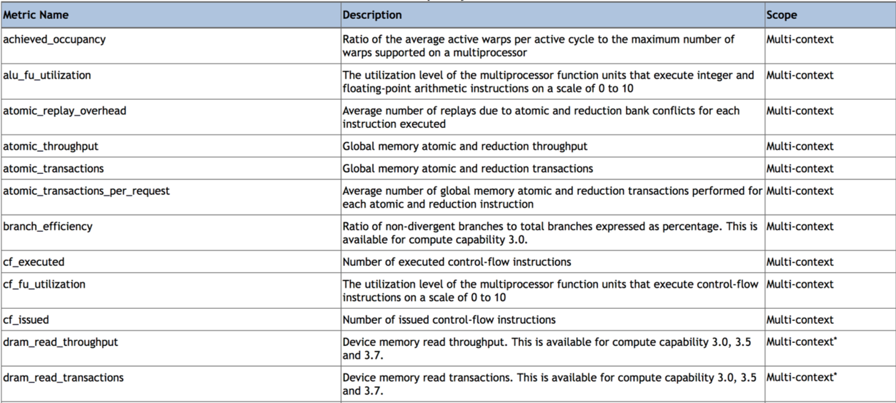

Tuning and Analysis Utilities (TAU)¶
TAU is a portable profiling and tracing toolkit that supports many programming languages. The instrumentation can be done by inserting in the source code using an automatic tool based on the Program Database Toolkit (PDT), on the compiler instrumentation, or manually using the instrumentation API.
Webpage: https://www.cs.uoregon.edu/research/tau/home.php
TAU is installed with Program Database Toolkit (PDT) on Summit. PDT is a framework for analyzing source code written in several programming languages. Moreover, Performance Application Programming Interface (PAPI) is supported. PAPI counters are used to assess the CPU performance. In this section, some approaches for profiling and tracing will be presented.
In most cases, we need to use wrappers to recompile the application:
- For C: replace the compiler with the TAU wrapper
tau_cc.sh - For C++: replace the compiler with the TAU wrapper
tau_cxx.sh - For Fortran: replace the compiler with the TAU wrapper
tau_f90.sh/tau_f77.sh
Even if you don’t compile your application with a TAU wrapper, you can
profile some basic functionalities with tau_exec, for example:
jsrun -n 4 –r 4 –a 1 –c 1 tau_exec -T mpi ./test
The above command profiles MPI for the binary test, which was not compiled
with the TAU wrapper.
Run-Time Environment Variables¶
The following TAU environment variables may be useful in job submission scripts.
| Variable | Default | Description |
|---|---|---|
| TAU_TRACE | 0 | Setting to 1 turns on tracing |
| TAU_CALLPATH | 0 | Setting to 1 turns on callpath profiling |
| TAU_TRACK_MEMORY_LEAKS | 0 | Setting to 1 turns on leak detection |
| TAU_TRACK_HEAP | 0 | Setting to 1 turns on heap memory routine entry/exit |
| TAU_CALLPATH_DEPTH | 2 | Specifies depth of callpath |
| TAU_TRACK_IO_PARAMS | 0 | Setting 1 with -optTrackIO |
| TAU_SAMPLING | 1 | Generates sample based profiles |
| TAU_COMM_MATRIX | 0 | Setting to 1 generates communication matrix |
| TAU_THROTTLE | 1 | Setting to 0 turns off throttling, by default removes overhead |
| TAU_THROTTLE_NUMCALLS | 100000 | Number of calls before testing throttling |
| TAU_THROTTLE_PERCALL | 10 | If a routine is called more than 100000 times and it takes less than 10 usec of inclusive time, throttle it |
| TAU_COMPENSATE | 10 | Setting to 1 enables runtime compensation of instrumentation overhead |
| TAU_PROFILE_FORMAT | Profile | Setting to “merged” generates a single file, “snapshot” generates a snapshot per thread |
| TAU_METRICS | TIME | Setting to a comma separated list (TIME:PAPI_TOT_INS) |
Compile-Time Environment Variables¶
Environment variables to be used during compilation through the environment variable TAU_OPTIONS
| Variable | Description |
|---|---|
| -optVerbose | Turn on verbose debugging messages |
| -optCompInst | Use compiler based instrumentation |
| -optNoCompInst | Do not revert to compiler instrumentation if source instrumentation fails |
| -optTrackIO | Wrap POSIX I/O call and calculate vol/bw of I/O operations |
| -optKeepFiles | Do not remove .pdb and .inst.* files |
| -optPreProcess | Preprocess Fortran sources before instrumentation |
| -optTauSelectFile=”<file>” | Specify selective instrumentation file for tau_instrumentor |
| -optTwauWrapFile=”<file>” | Specify path to link_options.tau generated by tau_gen_wrapper |
| -optHeaderInst | Enable instrumentation of headers |
| -optLinking=”” | Options passed to the linker |
| -optCompile=”” | Options passed to the compiler |
| -optPdtF95Opts=”” | Add options to the Fortran parser in PDT |
| -optPdtF95Reset=”” | Reset options for Fortran parser in PDT |
| -optPdtCOpts=”” | Options for C parser in PDT |
| -optPdtCXXOpts=”” | Options for C++ parser in PDT |
MiniWeather Example Application¶
Getting the source code¶
- Connect to Summit and navigate to your project space
- For the following examples, we’ll use the MiniWeather application: https://github.com/mrnorman/miniWeather
$ git clone https://github.com/mrnorman/miniWeather.git
Compile the application¶
- We’ll use the PGI compiler; this application supports serial, MPI, MPI+OpenMP, and MPI+OpenACC
$ module load pgi
$ module load parallel-netcdf
- Different compilations for Serial, MPI, MPI+OpenMP, and MPI+OpenACC:
$ module load cmake
$ cd miniWeather/c/build
$ ./cmake_summit_pgi.sh
$ make serial
$ make mpi
$ make openmp
$ make openacc
Below, we’ll look at using TAU to profile each case.
Modifications¶
- Edit the cmake_summit_pgi.sh and replace
mpic++withtau_cxx.sh. This applies only for the non-GPU versions. - TAU works with special TAU makefiles to declare what programming models are
expected from the application:
- The available makefiles are located inside TAU installation:
$ module show tau
---------------------------------------------------------------
/sw/summit/modulefiles/core/tau/2.28.1:
---------------------------------------------------------------
whatis("TAU 2.28.1 github ")
setenv("TAU_DIR","/sw/summit/tau/tau2/ibm64linux")
prepend_path("PATH","/sw/summit/tau/tau2/ibm64linux/bin")
help([[https://www.olcf.ornl.gov/software_package/tau
]])
The available Makefiles are named per-compiler and are located in:
$ ls ${TAU_DIR}/lib/Makefile.tau-pgi*
/sw/summit/tau/tau2/ibm64linux/lib/Makefile.tau-pgi-papi-mpi-cupti-pdt-openmp-pgi
/sw/summit/tau/tau2/ibm64linux/lib/Makefile.tau-pgi-papi-mpi-cupti-pdt-pgi
/sw/summit/tau/tau2/ibm64linux/lib/Makefile.tau-pgi-papi-pdt-pgi
/sw/summit/tau/tau2/ibm64linux/lib/Makefile.tau-pgi_memory_manager-papi-mpi-cupti-pdt-pgi
- To list all TAU makefiles:
$ ls ${TAU_DIR}/lib/Makefile.tau*
Instrumenting the serial version of MiniWeather¶
For a serial application, we should not use a Makefile with a programming
model such as MPI or OpenMP. However, as the source code for this specific
case includes MPI headers that are not excluded during the compilation of the
serial version, we should declare a Makefile with MPI. We can declare a TAU
makefile with the environment variable TAU_MAKEFILE. Moreover, with
TAU_OPTIONS below, we add options to the linker as the application depends on
PNetCDF.
$ module load tau
$ export TAU_MAKEFILE=/sw/summit/tau/tau2/ibm64linux/lib/Makefile.tau-pgi-papi-mpi-cupti-pdt-pgi
$ export TAU_OPTIONS='-optLinking=-lpnetcdf -optVerbose'
$ ./cmake_summit_pgi.sh
$ make serial
If there were no MPI headers, you should select the makefile
/sw/summit/tau/tau2//ibm64linux/lib/Makefile.tau-pgi-papi-pdt-pgi or if
you don’t want PDT support,
/sw/summit/tau/tau2//ibm64linux/lib/Makefile.tau-pgi-papi-pgi
Add to your submission script the TAU variables that you want to use (or
uncomment them below). By default the TAU will apply profiling, and not apply tracing.
#PAPI metrics
#export TAU_METRICS=TIME:PAPI_TOT_INS:PAPI_TOT_CYC
# Instrument the callpath
export TAU_CALLPATH=1
export TAU_CALLPATH_DEPTH=10
#Activate tracing
#export TAU_TRACE=1
jsrun -n 1 -r 1 -a 1 -c 1 -g 1 ./miniWeather_serial
When the execution finishes, one directory is created for each TAU_METRICS
declaration with the format MULTI__
- If you do not declare the
TAU_METRICSvariable, thenTIMEis used by default, and the profiling files are not in a directory. When the execution ends there will be one file per process calledprofile.X.Y.Z. In this case there is just one file, called profile.0.0.0
We can export a text file with some information through the pprof tool or
visualize it by using paraprof.
If an application has no MPI at all, use the argument --smpiargs="off" for
jsrun. Otherwise, TAU will fail as MPI is active by default.
$ pprof profile.0.0.0
Reading Profile files in profile.*
NODE 0;CONTEXT 0;THREAD 0:
---------------------------------------------------------------------------------------
%Time Exclusive Inclusive #Call #Subrs Inclusive Name
msec total msec usec/call
---------------------------------------------------------------------------------------
100.0 0.038 1:10.733 1 1 70733442 .TAU application
100.0 9 1:10.733 1 4654 70733404 int main(int, char **)
97.1 15 1:08.668 4501 27006 15256 void perform_timestep(double *, double *, double *, double *, double)
97.1 1,167 1:08.653 27006 54012 2542 void semi_discrete_step(double *, double *, double *, double, int, double *, double *)
48.4 34,240 34,240 13503 0 2536 void compute_tendencies_z(double *, double *, double *)
46.9 33,199 33,199 13503 0 2459 void compute_tendencies_x(double *, double *, double *)
2.5 224 1,752 151 33361 11608 void output(double *, double)
1.7 1,211 1,211 604 604 2006 MPI_File_write_at_all()
0.4 36 250 1 100003 250708 void init(int *, char ***)
...
USER EVENTS Profile :NODE 0, CONTEXT 0, THREAD 0
---------------------------------------------------------------------------------------
NumSamples MaxValue MinValue MeanValue Std. Dev. Event Name
---------------------------------------------------------------------------------------
1058 1.6E+05 4 9.134E+04 7.919E+04 MPI-IO Bytes Written
454 284 4 5.947 13.2 MPI-IO Bytes Written : int main(int, char **) => void output(double *, double) => MPI_File_write_at()
604 1.6E+05 1.6E+05 1.6E+05 0 MPI-IO Bytes Written : int main(int, char **) => void output(double *, double) => MPI_File_write_at_all()
1058 9412 0.1818 3311 3816 MPI-IO Write Bandwidth (MB/s)
454 1.856 0.1818 0.5083 0.1904 MPI-IO Write Bandwidth (MB/s) : int main(int, char **) => void output(double *, double) => MPI_File_write_at()
604 9412 2.034 5799 3329 MPI-IO Write Bandwidth (MB/s) : int main(int, char **) => void output(double *, double) => MPI_File_write_at_all()
755 8 8 8 0 Message size for all-reduce
302 2.621E+05 4 1.302E+05 1.311E+05 Message size for broadcast
---------------------------------------------------------------------------------------
- Explanation:
- One process was running as it is a serial application, even MPI calls are executed from a single thread.
- The total execution time is 70.733 seconds and only 9 msec are exclusive for the main routine. The rest are caused by subroutines.
- The exclusive time is the time caused by the mentioned routine, and the inclusive is with the execution time from the subroutines.
- The #Subrs is the number of the called subroutines.
- There is also information about the parallel I/O if any exists, the bytes, and the bandwidth.
Next, we will look at using the paraprof tool for the MPI version of MiniWeather.
Instrumenting the MPI version of MiniWeather¶
For the MPI version, we should use a makefile with MPI. The compilation could
fail if the makefile supports MPI+OpenMP, but the code doesn’t include any
OpenMP calls. Moreover, with TAU_OPTIONS declared below, we will add options to
the linker.
$ module load tau
$ export TAU_MAKEFILE=/sw/summit/tau/tau2/ibm64linux/lib/Makefile.tau-pgi-papi-mpi-cupti-pdt-pgi
$ export TAU_OPTIONS='-optLinking=-lpnetcdf -optVerbose'
$ make mpi
Add to your submission script the TAU variables that you want to use (or uncomment them below). By default, the TAU will apply profiling, and not tracing.
#PAPI metrics
export TAU_METRICS=TIME:PAPI_TOT_INS:PAPI_TOT_CYC
# Instrument the callpath
export TAU_CALLPATH=1
export TAU_CALLPATH_DEPTH=10
#Track MPI messages
export TAU_TRACK_MESSAGE=1
export TAU_COMM_MATRIX=1
#Activate tracing
#export TAU_TRACE=1
jsrun -n 64 -r 8 -a 1 -c 1 ./miniWeather_mpi
Instrumenting the MPI+OpenMP version of MiniWeather¶
The difference with the MPI instrumentation is the TAU Makefile, the jsrun execution command, and the declaration of the OpenMP threads.
$ module load tau
$ export TAU_MAKEFILE=/sw/summit/tau/tau2/ibm64linux/lib/Makefile.tau-pgi-papi-mpi-cupti-pdt-openmp-pgi
$ export TAU_OPTIONS='-optLinking=-lpnetcdf -optVerbose'
$ make openmp
Add to your submission script the TAU variables that you want to use (or uncomment them below). By default, the TAU will apply profiling, and not tracing.
#PAPI metrics
export TAU_METRICS=TIME:PAPI_TOT_INS:PAPI_TOT_CYC
# Instrument the callpath
export TAU_CALLPATH=1
export TAU_CALLPATH_DEPTH=10
#Track MPI messages
export TAU_TRACK_MESSAGE=1
export TAU_COMM_MATRIX=1
#Activate tracing
#export TAU_TRACE=1
export OMP_NUM_THREADS=4
jsrun -n 16 -r 8 -a 1 -c 4 -b packed:4 ./miniWeather_mpi_openmp
Instrumenting the MPI+OpenACC version of MiniWeather¶
- For the current TAU version, you should use the
tau_execand not the TAU wrappers only for the compilation. - Use the
mpic++compiler in the Makefile, do not use TAU wrapper. - Build the MPI+OpenACC version by running
make openacc. - Add the following in your submission file:
export TAU_METRICS=TIME
export TAU_PROFILE=1
export TAU_TRACK_MESSAGE=1
export TAU_COMM_MATRIX=1
jsrun -n 6 -r 6 --smpiargs="-gpu" -g 1 tau_exec -T mpi,pgi,pdt -openacc ./miniWeather_mpi_openacc
- We declare to TAU to profile the MPI with PDT support through the
-Tparameters, as well as using thepgitag for the TAU makefile and OpenACC. - CUPTI metrics for OpenACC are not yet supported for TAU.
Preparing profiling data¶
- When the execution of the instrumented application finishes, there is one
directory for each
TAU_METRICSdeclaration with the formatMULTI__- If you do not declare the
TAU_METRICSvariable, then by defaultTIMEis used and the profiling files are not in a directory. When the execution ends, there will be one file per process, calledprofile.X.Y.Z.
- If you do not declare the
- In order to use paraprof to visualize the data, your ssh connection should support X11 forwarding.
- Pack the profiling data with a name that you prefer and start the paraprof GUI
$ paraprof --pack name.ppk
$ paraprof name.ppk &
Paraprof¶
- The first window that opens when the
paraprof name.ppkcommand is executed shows the experiment and the used metrics, for this case,TIME,PAPI_FP_OPS,PAPI_TOT_INS,PAPI_TOT_CYC.
- The user is responsible for understanding which PAPI metrics should be used
- The second window that is automatically loaded shows the
TIMEmetric for each process (they are called “nodes”) where each color is a different call. Each horizontal line is a process or Std.Dev./mean/max/min. The length of each color is related to the metric, if it isTIME, it is duration.

- Select Options -> Uncheck Stack Bars Together
- It is easier to check the load imbalance across the processes

- If you click on any color, then a new window opens with information about the specific routine.

- If you click on the label (node 0, node 1, max, etc.), you can see the value across each routine in your application.

- Right click on the label (node 0, node 1, max, etc.), and then select “Show Context Event Window” (with callpath activated). We can then see various calls from where they were executed, how many times, and other various information.

- Select Options -> Show Derived Metric Panel, choose the metrics and then the operator that you want, then click Apply. Uncheck the Show Derived Metric.
- Click on the new metric, “PAPI_TOT_INS / PAPI_TOT_CYC” to see the instructions per cycle (IPC) across the various routines.
- Click on the label mean:

- For the non-MPI routines/calls, an IPC that is lower than 1.5 means that there is a potential for performance improvement.
- Menu Windows -> 3D Visualization (3D demands OpenGL) will not work on Summit, and you will need to download the data on your laptop and install TAU locally to use this feature.
- You can see per MPI rank, per routine, the exclusive time and the floating operations.

- Change the PAPI_FP_OPS to (PAPI_TOT_INS/PAPI_TOT_CYC)
- You can see per MPI rank, per routine, the exclusive time and the corresponding IPC.

Which loops consume most of the time?¶
- Create a file called, for example,
select.tauwith the content:
BEGIN_INSTRUMENT_SECTION
loops routine="#"
END_INSTRUMENT_SECTION
Then declare the options in your submission script:
export TAU_OPTIONS="-optTauSelectFile=select.tau -optLinking=lpnetcdf -optVerbose"
- The linking option is required for this application, but may not be for all applications.
- Do not forget to unset
TAU_OPTIONSwhen it’s not necessary. - Execute the application as previously shown.
- Now you can see the duration of all the loops

- Select Options -> Select Metric… -> Exclusive… -> PAPI_TOT_INS/PAPI_TOT_CYC

The loops with less than 1.5 IPC have poor performance and could likely be improved.
MPI+OpenMP¶
- Execute the MPI+OpenMP version
- Now you can see the duration of parallelfor loops and decide when they should be improved or even removed.

GPU¶
- When we instrument the MPI with OpenACC, we can see the following through paraprof
- We can observe the duration of the OpenACC calls
- From the main window right click one label and select “Show User Event Statistics Window”. Then, we can see the data transfered to the devices
CUDA Profiling Tools Interface¶
The CUDA Profiling Tools Interface (CUPTI) is used by profiling and tracing tools that target CUDA applications.
Matrix multiplication with MPI+OpenMP:
$ export TAU_METRICS=TIME,achieved_occupancy
$ jsrun -n 2 -r 2 -g 1 tau_exec -T mpi,pdt,papi,cupti,openmp -ompt -cupti ./add
We choose to use tau_exec with MPI, PDT, PAPI, CUPTI, and OpenMP.
Output directories:
MULTI__TAUGPU_TIME
MULTI__CUDA.Tesla_V100-SXM2-16GB.domain_d.active_warps
MULTI__CUDA.Tesla_V100-SXM2-16GB.domain_d.active_cycles
MULTI__achieved_occupancy
There are many directories because the achieved occupancy is calculated with this formula
Achieved_occupancy = CUDA.Tesla_V100-SXM2-16GB.domain_d.active_warps / CUDA.Tesla_V100-SXM2-16GB.domain_d.active_cycles
You can see in the window with the profiling data after you pack them and execute paraprof, the profiling data are not across all the processes, it depends if a routine (color) is executed across all of them or not based on the type of the rourine CPU/GPU.


- Select the metric achieved occupancy

- Click on the colored bar
- The achieved occupancy for this simple benchmark is 6.2%
A similar approach for other metrics, not all of them can be used.
TAU provides a tool called tau_cupti_avail, where we can see the list of
available metrics, then we have to figure out which CUPTI metrics use these ones.
Tracing¶
Activate tracing and declare the data format to OTF2. OTF2 format is supported only by MPI and OpenSHMEM applications.
$ export TAU_TRACE=1
$ export TAU_TRACE_FORMAT=otf2
Use Vampir for visualization.
Selective Instrumentation¶
For example, do not instrument routine sort*(int *)
- Create a file
select.tau
BEGIN_EXCLUDE_LIST
void sort_#(int *)
END_EXCLUDE_LIST
- Declare the
TAU_OPTIONSvariable
export TAU_OPTIONS=“-optTauSelectFile=select.tau”
- Now, the routine
sort*(int *)is excluded from the instrumentation.
Dynamic Phase¶
- Create a file called
phase.tau.
BEGIN_INSTRUMENT_SECTION
dynamic phase name=“phase1” file=“miniWeather_mpi.cpp” line=300 to line=327
END_INSTRUMENT_SECTION
- Declare the
TAU_OPTIONSvariable.
export TAU_OPTIONS=“-optTauSelectFile=phase.tau”
- Now when you instrument your application, the phase called phase 1 are the
lines 300-327 of the file
miniWeather_mpi.cpp. Every call will be instrumented. This could create signiificant overhead, thus you should be careful when you use it.
Static Phase¶
- Create a file called
phases.tau.
BEGIN_INSTRUMENT_SECTION
static phase name="phase1" file="miniWeather_mpi.cpp" line=300 to line=327
static phase name="phase2" file="miniWeather_mpi.cpp" line=333 to line=346
END_INSTRUMENT_SECTION
- Declare the
TAU_OPTIONSvariable.
export TAU_OPTIONS=“-optTauSelectFile=phases.tau”
- Now, when you use paraprof, you can see different colors for the phase1 and phase2
OpenMP Offload¶
- Initially compile your application without TAU and create a dynamic binary
- Use all the compiler options requiried for OpenMP offload
- Then execute, for example with XL compiler, 1 resource set, 1 MPI process with 2 OpenMP threads, and 2 GPUs:
jsrun --smpiargs="-gpu" -n 1 -a 2 -c 2 -r 1 -g 2 -b packed:2 tau_exec -T cupti,papi,openmp,xl -cupti ./a.out